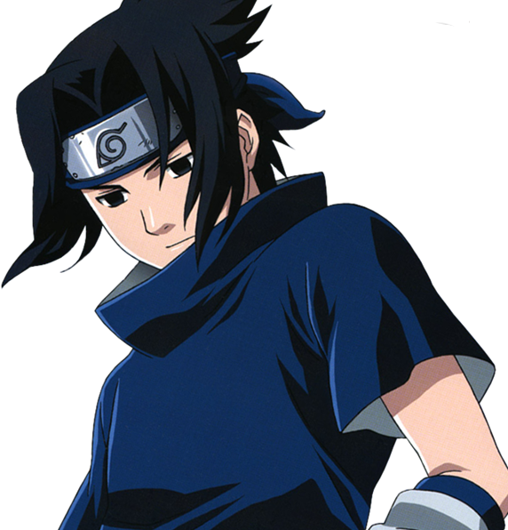

Саске Учиха (яп. うちはサスケ, Учиха Саске) — один из последних выживших членов клана Учиха из Деревни Скрытого Листа. После того, как его старший брат Итачи вырезал весь их клан, Саске поставил перед собой жизненную цель отомстить за клан и семью, убив Итачи. Он попадает в Команду 7, когда становится ниндзя, и благодаря состязаниям со своим соперником и лучшим другом, Наруто Узумаки, начинает оттачивать свои навыки. Недовольный своим прогрессом, он покидает Лист, чтобы обрести силу, необходимую для осуществления мести. Годы, проведённые в поисках мести, стали невероятно взыскательными и неразумными, равно как и изолировали его от других, из-за чего он вскоре становится международным преступником. После того, как Саске сыграл одну из ключевых ролей в окончании Четвёртой Мировой Войны Шиноби, а Наруто смог избавить его от ненависти, он решает вернуться в Скрытый Лист и посвящает свою жизнь защите деревни и её жителей — таким образом, он становится известен под прозвищем "Поддерживающий Каге" (яп. 支う影, Сасаукагэ, Буквальное значение: Поддерживающая Тень).